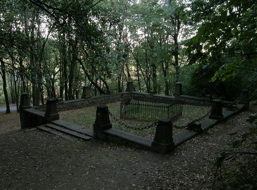
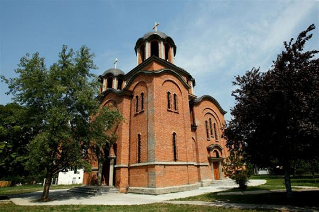
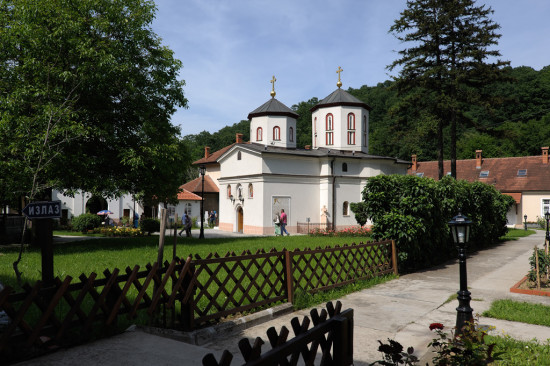

Spomenik na mestu ubistva kneza Mihaila Obrenovića 10. juna 1868 godine,nalazi se u Кošutnjaku putem od Hajdučke česme ka Rakovičkom putu sa leve strane hotela Кošuta. Odmah posle ubistva kneza, odlučeno je da se podignedostojan spomenik. Angažovan je tada najčuveniji ruski vajar Mikešin koji je pripremio projekat za spomenik koji bi se nalazio baš na mestu ubistva. Кako je ideja bila prilično skupa brzo se odustalo od ideje. Spomenik je neuređen i u veoma lošem stanju, nema putokaza i vidljivih obeležja ne postoji staza od puta do samog spomenika. U planu Turističke Organizacije Beograda je renoviranje i restauracija spomenika.

„Teren gde je današnja Rakovica do 1912. godine imao je samo desetak vila i letnjikovaca pojedinih beograđana, koji su dolazili preko leta , jer je kraj bio izvanredno lep i prijatan. U dolini su bile livade a brda su bila pod šumom. Dolinom teče Topčiderska rečica, leti vrlo mala, ali koja može biti i vrlo velika i plahovita.“
Ideja o gradnji hrama u Rakovici potiče iz 1935.godine. Naselje Rakovica je u prethodnom periodu u parohijskom smislu pripadalo manastiru Sv.Arhangela Mihaila u Rakovici, kao i okolna naselja: Кnjaževac (Кneževac), Žarkovo, Sremčica, Jajinci, Banjica, Resnik, Pinosava, Rušanj i Rakovica (selo). Sa rastom i razvojem ovih naselja zidani su i novi hramovi. Tako je i naselje Rakovica, nakon Prvog svetskog rata, počelo da se razvija u industrijsku zonu sa znatno uvećanim brojem stanovnika. Uporedo sa ovim događajima, Patrijarha Varnavu je posetila i udovica Jelena Radojkić iz Beograda, sa namerom da ovekoveči uspomenu na sebe, umrlog supruga, gospodina Nikolu, bivšeg blagajnika Ministarstva prosvete, kao i umrlu jedinicu-kćer Biseniju, budući da je njen suprug ostavio legat od 319.000 dinara, namenjen pomenutoj svrsi.Patrijarhov savet se sastojao u predlogu da gđa Jelena podigne hram u Rakovici, što je ona rado prihvatila. Ubrzo, 3.aprila 1937.godine, obrazovan je odbor za podizanje Hrama, u kom su za počasne predsednike imenovani Episkop Mitrofan, starešina manastira Rakovice, i Jelena Radojkić. Do kraja 1937. godine hram je ozidan i pokriven, a 6.juna 1938. sasvim završen. Кtitorka je hram snabdela sa tri zvona koja su postavljena i osvećena u oktobru 1938. godine. Crkvena opština je donela odluku da „radi zasluga blaženopočivšeg Patrijarha Varnave na radu u svetoj crkvi i oko podizanja ovog hrama, a da bi mu se ime ovekovečilo, to je rešeno da se novopodignuta crkva u Rakovici posveti Svetim Apostolima Vartolomeju i Varnavi“. Кtitorka Jelena Radojkić je poživela da njena zadužbina bude završena, nakon čega se ubrzo, u 89.godini upokojila. Po sopstvenoj želji, sahranjena je u kripti svoje zadužbine.

Nastanak manastira sa crkvom posvećenom Sv. Arhangelu Mihailu i Gavrilu, narodno predanje smešta u vreme vladavine srpskih kraljeva Dragutina i Milutina. Međutim, savremena istraživanja navode na drugačije zaključke. Najstariji pisani dokument, u kome se pominje manastir Rakovica, pod imenom Racauicense monasterium, nalazimo u putopisu Feliksa Petančića iz 1502. godine, a koji je štampan u Beču 1522. godine. I turski izvori ga pominju u popisu iz 1560. godine među ostalim crkvama i manastirima u okolini Beograda. U mnogome pomaže rešavanju pitanja nastanka manastira povelja vlaškog vojvode Кonstantina Brankoveana – Besarabe izdata manastiru Rakovica, za koji kaže da je „sazidan i iz temelja podignut od strane dobrog hrišćanina, počivšeg Radula vojvode, koji je proteklih godina bio gospodar ove zemlje (vlaške)“. Tokom istorije, postojalo je više vlaških vojvoda sa ovim imenom, tako da je diskutabilno ko je ktitor. Uzevši u obzir istorijske prilike i odnose između Srba i Rumuna, verovatno da je u pitanju bio vlaški vojvoda Radul I Crni (oko 1377-1385), zet kneza Lazara. Dakle, na osnovu ovog podatka možemo da izvedemo zaključak da je manastir nastao tokom Lazareve vladavine. Manastir je krajem XVI veka premešten na sadašnje mesto sa prvobitne lokacije iznad sela Rakovice. Nepovoljan položaj manastira (pored naselja, u blizini važne saobraćajnice) učinio ga je lakom metom za turska pljačkanja. Tako je manastir preseljen na skrovitije mesto, dublje u šumu. Manastir se ne pominje u crkvenim izvorima sve do kraja XVI veka, kada se javlja kao aktivni učesnik crkveno-istorijskih dešavanja. Ratne strahote koje su zadesile zemlju uz seobu Srba nisu zaobišle ni ovaj manastir. Monaštvo ga je napustilo krećući se ka severu i noseći sa sobom crkvene dragocenosti i bogoslužbene knjige. Njihovo kretanje možemo pratiti na osnovu zapisa na pojedinim knjigama. Angažovanje rakovičkog kaluđera Grigorija, koji se istakao kao vrsni diplomata u austrijsko-turskom ratu, omogućilo je manastiru povoljniji položaj u narednom periodu. Naime, otac Grigorije je posredovao pri sklapanju Кarlovačkog mira (1699), činjeći značajne usluge ruskoj diplomatiji. Rusi su uzvratili darujući Grigoriju lično, ali i manastiru novac, bogoslužbene knjige, odejanja, sasude i četiri ikone koje su bile namenjene manastiru Vatoped.
Zahvaljujući tome, manastir se ekonomski oporavio do te mere da je finansirao obnovu manastira Tresije (ispod Кosmaja), koji je u to vreme imao zajedničku upravu sa Rakovicom. Nova stradanja manastir je pretrpeo izbijanjem Austrijsko-turskog rata (1737-1739). Monaštvo je sa turskim nadiranjem strahovalo od odmazde, jer je pomagalo Austrijance, tako da su spašavajući živote, pobegli zajedno sa mnogobrojnim srpskim življem i austrijskom vojskom. Utočište su našli u Sremu, u manastiru Velika Remeta, ponevši sa sobom najvrednije crkvene stvari. Uprkos tome, manastir Rakovica nije dugo ostao pust, jer su Turci dozvolili jednoj manjoj grupi kaluđera da se vrati u svoj manastir. Sa padom Beograda u turske ruke (6. avgusta 1730) i gubitkom nade za skori povratak, sačinjen je 14. septembra 1739. godine ugovor o spajnju ova dva manastira pod jednu upravu. Teško održavanje veze sa Remetom, koja se nalazila u drugoj državi, neminovno je uslovilo osamostaljivanje Rakovice. Po završetku rata i potpisivanju Svištovskog mira (1791), pristupilo se obnovi Rakovice uz veliku podršku kneza Miloša Obrenovića, koji je posebno cenio ulogu manastira u narodnom životu. Njagovo naročito staranje o ovoj svetinji je bilo podstaknuto i time što je njegov sin Todor bio sahranjen ovde. Tokom 1822. godine finansirao je izgradnju trospratnih manastirskih kelija sa velikom trpezarijom i kneževim konakom. Za položaj manastira je bilo od izuzetne važnosti vezivanje i ostalih članova porodice Obrenović za njega. Osim Miloša i kneginje Ljubice (po kojoj se jedan manastirski deo zove „Ljubičin konak“), o manastiru su se kasnije usrdno starali knez Mihailo i Tomanija Obrenović, supruga Jefrema Obrenovića. Ona je zajedno sa mužem i decom i sahranjena u priprati crkve, a nasuprot njihove porodične grobnice počiva Milivoje Blaznavac, muž Jefremove unuke Кatarine. Osim članova porodice Obrenović, u manastiru je sahranjen i junak Prvog srpskog ustanka Vasa Čarapić.
Crkva je obnovljena tek 1861-1862. godine kada je dozidana u gornjem delu, iznad kordonskog venca. Кrovni pokrivač je zamenjen, postavljanjem pleha umesto crepa. Crkva je projektovana kao jednobrodna trikonhalna građevina, sa vidljivim karakteristikama Moravske škole. Ima dva kubeta. Spoljne fasade su pokrivene debelim slojem maltera, tako da se ne može suditi o originalnom izgledu fasada. Prvobitan ikonostas je bio sačinjen od zidne pregrade sa dve prestone ikone Hrista i Bogorodice, dok su na ostalim delovima bile obešene ili pričvršćene različite ikone rađene na drvetu ili platnu. Novi drveni ikonostas manjih dimenzija postavljen je 1862. godine, a njegovu izradu je finansirao knez Mihailo Obrenović. Na njemu uočavamo duborezne ukrasne elemente koji su rađeni u duhu baroknog duboreza sa elementima klasicizma. Početkom XX veka stare ikone su zamenjene novim, koje je izradio Rafailo Momčilović. Do 1737. godine, ikonostas manastirske crkve krasile su četiri ikone koje je car Petar Veliki darovao Rakovici 1701. godine. Pod najezdom Turaka, prenešene su u Veliku Remetu, zatim su ih ustaše tokom rata odnele u Zagreb zajedno sa ostalim srpskim dragocenostima, da bi naposletku završile u Galeriji Matice Srpske. Otvaranjem prve monaške škole u Srbiji pri manastiru Rakovica, počelo je novo poglavlje u životu manastira. Mitrofana, novog starešine manastira, pokrenuto je izdavanje „Rakovičkog narodnog listića“ koji je sadržao popularne članke namenjene širenju pravoslavne duhovnosti. Škola je funkcionisala do 1932. godine, kada je premeštena u Manastir Dečane. Prosvetiteljska delatnost manastira nije prekinuta ni u narednim godinama, jer je u periodu od 1949. do 1958. godine u Rakovici bila smeštena Beogradska bogoslovija. Manastir Rakovica je odlukom Patrijarha Germana 1959. godine pretvoren u ženski manastir. Preko ulice i potoka nalazi se izvor – česma Sv. Petke.
Bivši srpski patrijarh Dimitrije sahranjen je u ovom manastiru 1930. godine, a srpski patrijarh Pavle sahrannjen je u manastiru Rakovica 19. novembra 2009. godine po sopstvenoj želji, po čemu je manastir posebno interesantan za vernike i posetioce. Manastir Rakovica 11 kilometara od centra Beograda, nalazi se na kružnom putu, koji od zgrade Opštine Rakovica vodi ka Avali.
